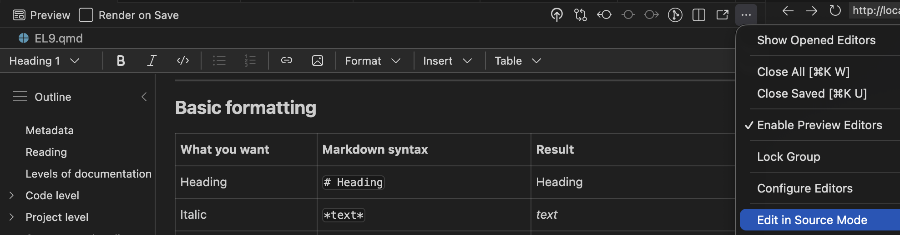
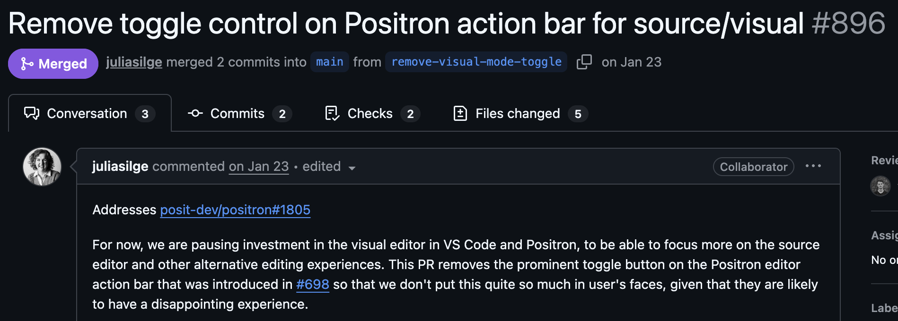

#' Say hello#'#' Create a simple greeting. If no name is provided, the function#' returns a greeting to the world.#'#' @param who A character vector giving the name(s) of the person or#' object to greet. If missing, the greeting defaults to `"world"`.#'#' @return A character vector of the same length as `who` containing#' greeting messages.#'#' @examples#' hello()#' hello("you")#' hello(c("Alice", "Bob"))hello <-function(who ="world") {sprintf("Hello %s!", who)}
There is a standardized syntax to document R functions
You should be able to click a small light bulb (💡) to insert a sceleton when writing your function
# is used for comments in R files and within R blocks but for headings in .md and .qmd files!
Visual mode
Instead of editing the source code, you may also use the “visual editor” in Positron:

Warning

Use both?
Personally, I do most editing in source mode (better for the R chunks), but I find it much easier to include references/citations and to paste in external figures in using the visual mode.
Reproducible Workflows
Modern biostatistics projects rarely involve only statistics.
data cleaning and preprocessing
statistical modelling
visualisation
interpretation of results
reporting and documentation
A good workflow should make it possible to combine all of these steps in one place.
Output level
What?
Quarto is a publishing system for scientific and technical documents.
It allows you to combine:
text
R code
statistical results
tables and figures
in a single workflow.
This makes it easier to create reproducible statistical reports.
Why?
In many projects people work with:
R scripts for analysis 🥳
Word documents for reporting 😱
PowerPoint slides for presentations 😱
This separation often leads to:
copy–paste errors 🥴
outdated figures 👎
results that cannot easily be reproduced 🤯
Quarto helps avoid these problems!
Reproducible analysis
In a Quarto document you can:
write the explanation of your analysis
include the R code used
generate figures and tables automatically
update everything by re-running the document
If the data or model changes, the entire report can be regenerated automatically.
It is widely used in data science, epidemiology and biostatistics.
Integrated in Positron and developed by Posit PBC
Used in three ways
For communicating to decision-makers, who want to focus on the conclusions, not the code behind the analysis.
For collaborating with collegues (including future you!), who are interested in both your conclusions, and how you reached them (i.e. the code).
As an environment in which to do data science and statistics, as a modern-day lab notebook where you can capture not only what you did, but also what you were thinking.
A simple report
When you chose New > New File ... > Quarto document, the file will contain:
---title:"Untitled"format: html---
This is a YAML header (Yet Another Markup Language)
library(targets)library(tarchetypes) # Let you integrate a quarto report/presentationlist(tar_target(data, data.frame(x =seq_len(26), y = letters))tar_quarto(report, "report.qmd") # Make presentation)
In report.qmd
---title: My reportformat: html---# Here is my beautiful data!```{r}gt::gt(tar_read(data))```
Try it
Copy this code to the terminal (not the console!) and try targets::tar_make() in the console!
cdmkdir test_targets_quartocat> test_targets_quarto/_targets.R <<'EOF'library(targets)library(tarchetypes) # Lets you integrate a quarto report/presentationlist( tar_target(data, iris), tar_target(model, lm(Sepal.Length ~ ., data)), tar_quarto(report, "report.qmd") # Make presentation)EOFcat> test_targets_quarto/report.qmd <<'EOF'---title: My projectauthor: My namedate: todayformat: typst: default docx: default html: default revealjs: output-file: slides.html---## Here are some flowers!gtsummary::tbl_summary(targets::tar_read(data))## And here is a modelgtsummary::tbl_regression(targets::tar_read(model))EOFpositron test_targets_quarto# rm -r test_targets_quarto